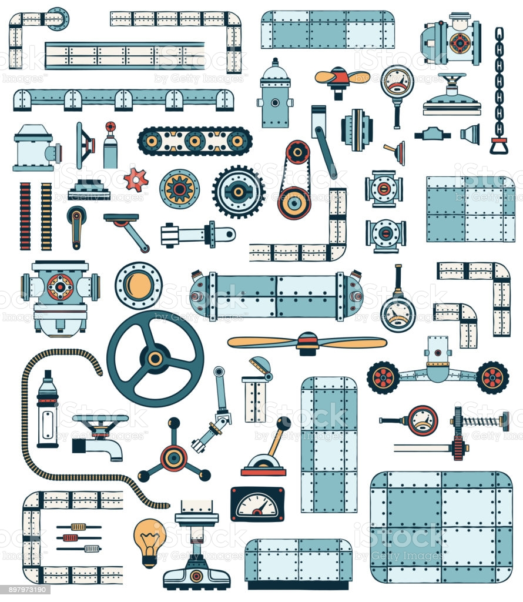

<!--
  Generated template for the CursoPage page.

  See http://ionicframework.com/docs/components/#navigation for more info on
  Ionic pages and navigation.
-->
<ion-header>
  <ion-navbar>
    <button ion-button menuToggle>
      <ion-icon name="menu"></ion-icon>
    </button>
    <ion-title> Curso de Mecânica Industrial</ion-title>
  </ion-navbar>
</ion-header>

<ion-content padding>

  <div class="scrollmenu">
    <a (click)="cad()">
      <ion-card class="card">
        <ion-card-header>
          
          <ion-card-title>Elementos de Máquina</ion-card-title>
        </ion-card-header>
        <ion-card-content style="white-space: normal;">
          Aulas e materiais da disciplina de Elementos de Máquinas (todos os anos)
        </ion-card-content>
      </ion-card>
    </a>
    <a (click)="cad()">
      <ion-card class="card">
        <ion-card-header>
          
          <ion-card-title style="">Manutenção Mecânica</ion-card-title>
        </ion-card-header>
        <ion-card-content>
          Aulas e materiais da disciplina de Manutenção Mecânica (todos os anos)
        </ion-card-content>
      </ion-card>
    </a>
    <a (click)="cad()">
      <ion-card class="card">
        <ion-card-header>
          
          <ion-card-title>Metrologia</ion-card-title>
        </ion-card-header>
        <ion-card-content style="white-space: normal;">
          Aulas e materiais da disciplina de Metrologia (todos os anos)
        </ion-card-content>
      </ion-card>
    </a>
    <a (click)="cad()">
      <ion-card class="card">
        <ion-card-header>
          
          <ion-card-title style="text-decoration: normal;">Desenho Técnico</ion-card-title>
        </ion-card-header>
        <ion-card-content style="white-space: normal;">
          Aulas e materiais da disciplina de Desenho Técnico (todos os anos)
        </ion-card-content>
      </ion-card>
    </a>
  </div>
</ion-content>
